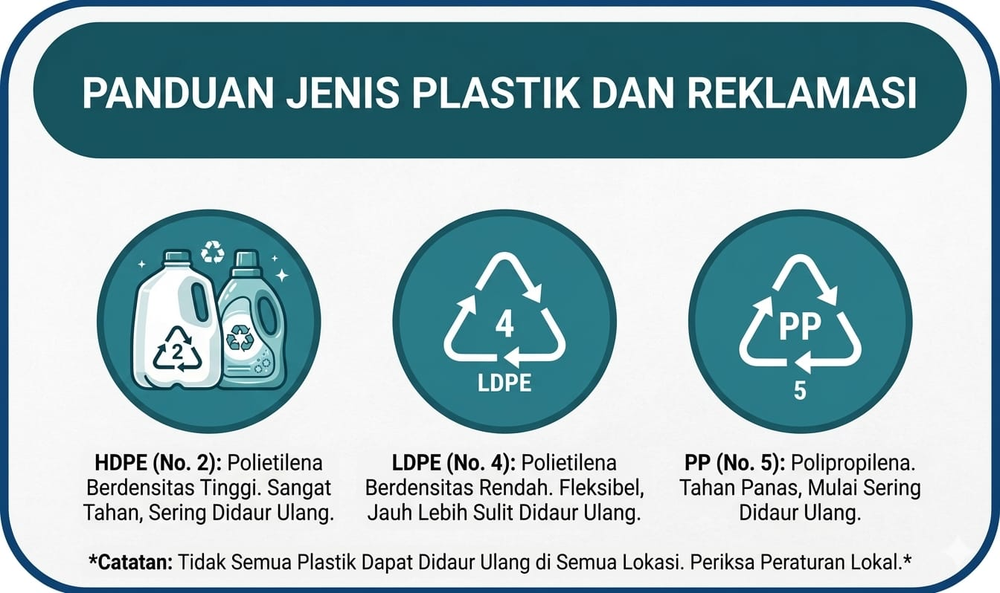
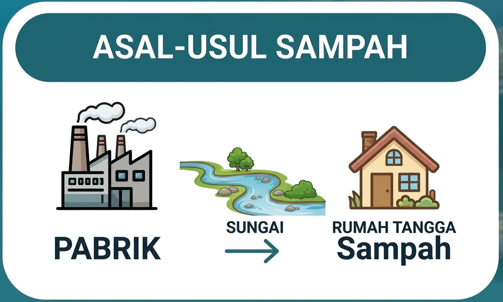
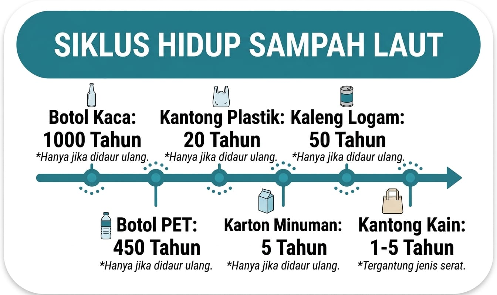
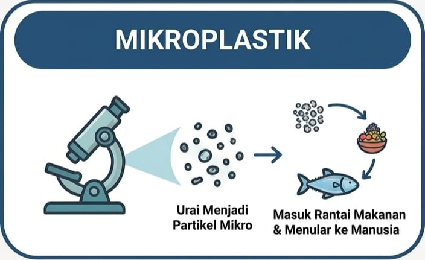
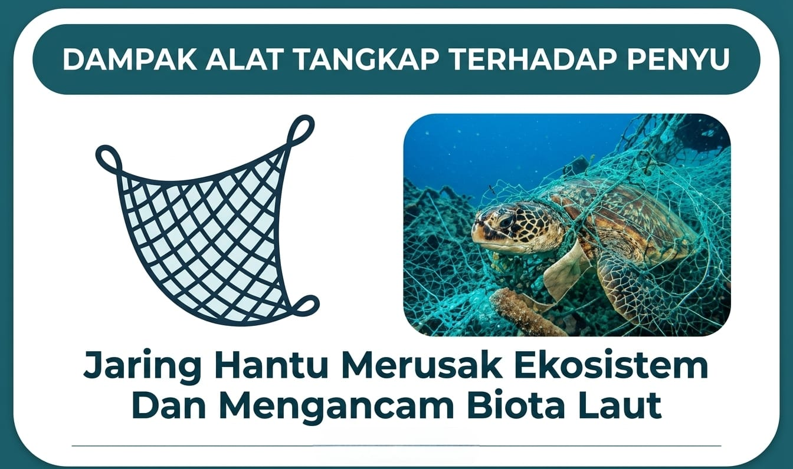
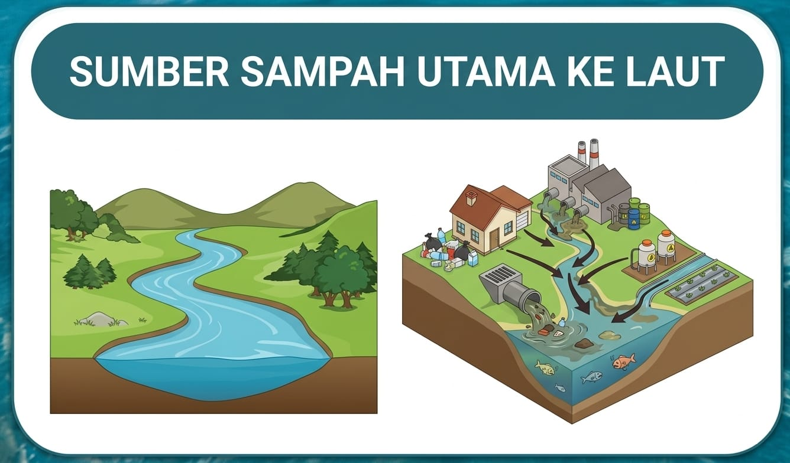

Pelajari asal, jenis, dan siklus hidup sampai yang mengancam laut kita






Pencemaran laut memberikan dampak serius bagi ekosistem, kehidupan manusia, dan masa depan bumi.
Ribuan hewan laut mati akibat plastik dan limbah berbahaya.
Limbah dan sampah merusak kualitas air dan habitat laut.
Mikroplastik masuk ke ikan dan dikonsumsi manusia.
Terumbu karang dan habitat laut rusak akibat pencemaran.